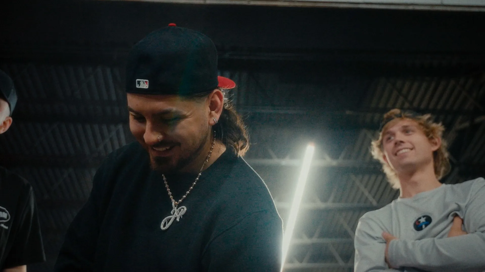
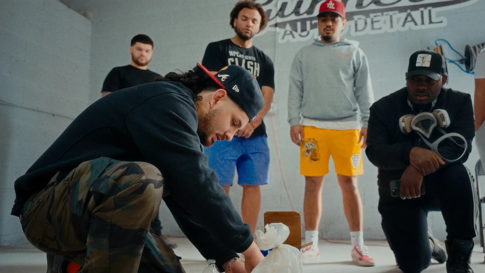
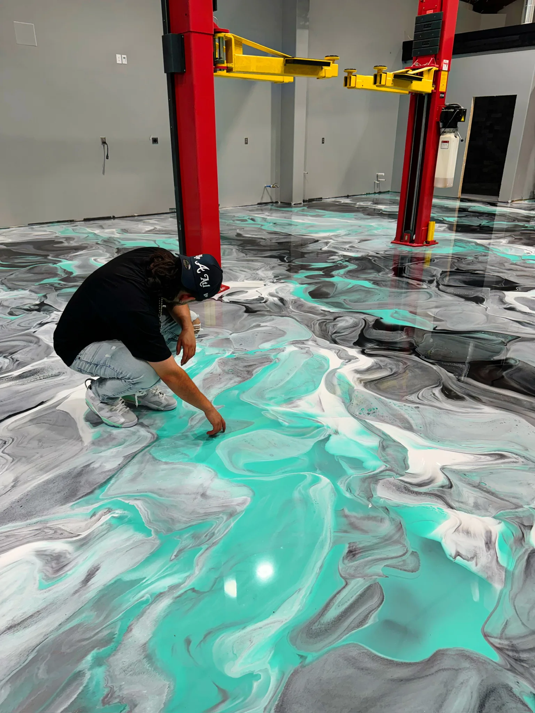
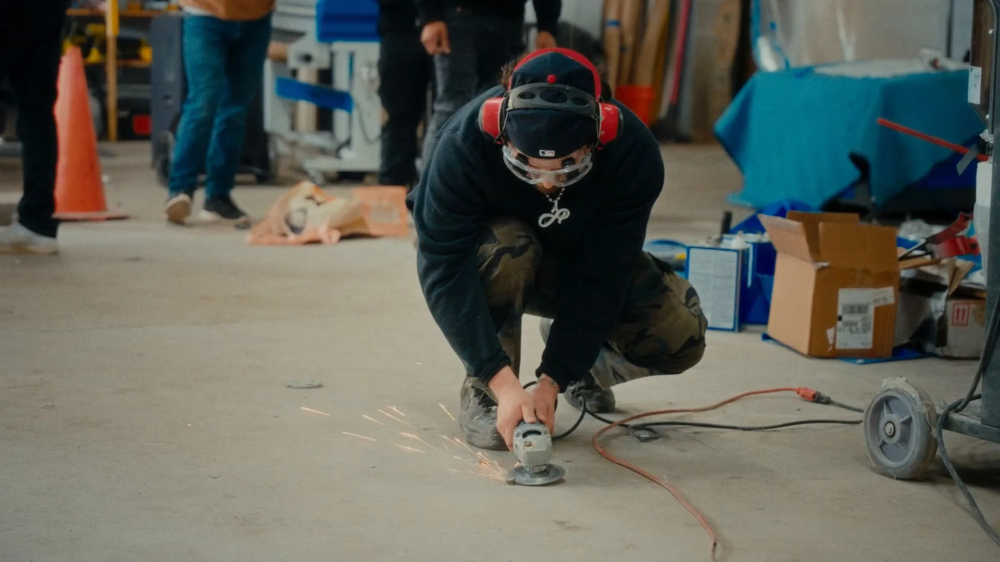
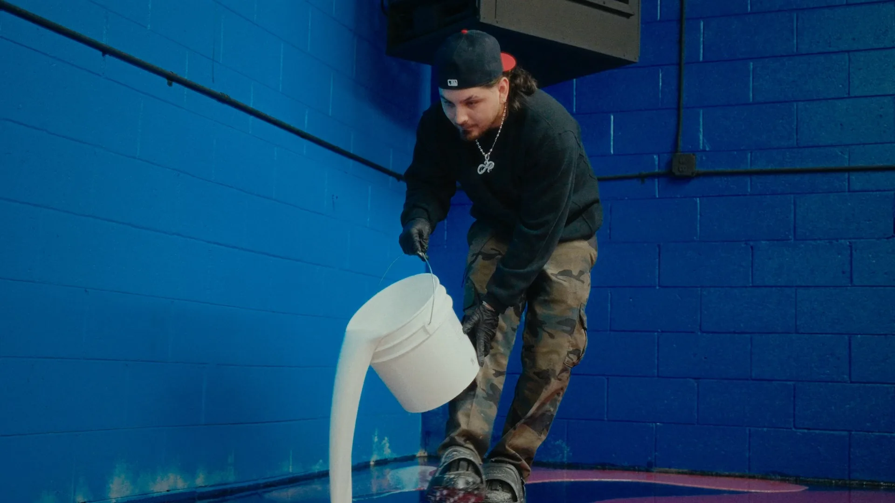

One man, one grinder, one truck. Eighteen months later JP Resin runs paid media, a national online course and a commercial pipeline out of Atlanta, and nobody answers a cold DM by hand. This is the machine we built, stage by stage, with the numbers it actually returned.
A funnel ends the day the ad budget stops. This doesn't. Every closed job writes the brief for the next piece of content, and every conversation the bot handles teaches it which question to ask first. The machine gets cheaper to run the longer it runs.
Make writes the qualified conversation into the CRM with its answers already attached.
Brand, site and content built so the work photographs like a product, not a trade job.
Meta Ads for the metro jobs, organic reels for reach the ads can't buy.
An agent we built qualifies every DM and SMS the moment it lands, day or night.
Go High Level holds one pipeline per revenue line. The rep opens a deal already briefed.
The GHL dashboards report which angle, zip and format actually paid. That answer becomes step 02.
The step that changed the business was not the ads. It was step 04. Before the bot, every lead waited for JP to put down a grinder and pick up a phone. Response time was measured in hours and the best hours to reply were exactly the hours he was on a floor. Moving the first reply to a machine is where the +80% in sales management efficiency came from.
Make sits between the conversation and Go High Level. The moment an inbound message has been qualified, one scenario fires and the deal exists in the CRM with every answer already attached to it. The rep never opens Instagram to find out what the customer said.
The scenario only runs when intent_type
and zip_code
are both resolved. Half-finished chats stay in the conversation layer and keep getting nudged.
A floor lead, a commercial lead and a course buyer arrive in different words and leave in the same schema, so the dashboard can compare them later without a cleanup step.
Go High Level gets the deal, the right pipeline, an owner, and a summary the rep can read in eight seconds before dialling.

The hours the system gave backEpoxy is sold on a photograph. Before a single dollar went to media we rebuilt the site and the content system so a finished floor reads like something you buy, not something you hire. Same crew, same resin, different frame.

Metallic pour · AtlantaThe old site sold a service and listed a phone number. The new one sells a finished floor and opens a conversation. Every job now leaves the shop with a shot list, so the content pipeline is fed by the work itself instead of by a separate production budget.

Prep, on cameraPaid buys the metro jobs that close this month. Organic buys reach that no budget can match. The course turns the reach that will never book a floor in Atlanta into revenue anyway. All three land in the same conversation layer.
Meta Ads pointed at garages, showrooms and shops inside the drive radius. Intent is high, the geography is a hard filter, and the crew can be there this week.
Reels of the pour itself. Cheap to make because the work was happening anyway, and it travels far past any market the truck can reach.
The answer to the most repeated comment on every viral reel: how do I learn this? Zero install cost, no drive radius, and every graduate becomes a source of content.
Reach and revenue are not the same axis. 7M views does not mean 7M buyers: the vast majority of that audience will never be inside the service area. Treating the out-of-market share as a loss is what kept the course from being built for a year. Treating it as a second product is what turned it into +$18,000.
An agent we wrote with Claude Code answers every Instagram DM, Facebook message and inbound SMS the second it arrives, inside Go High Level. It doesn't pitch. It asks the twelve things a rep would have to ask anyway, in the order that disqualifies fastest.
Twelve fields per conversation. Scored 1 to 5 on how much each one changes what the rep says when the call connects.
A residential garage, a 6,000 square foot showroom and a course seat are three different sales, three different cycle lengths and three different definitions of won. Running them in one pipeline is how forecasts stop meaning anything.
Short cycle. Photo, quote, deposit. Most of the paid media volume lands here.
Longer cycle, site visit, sometimes a landlord. Highest ticket per deal.
No site, no crew, no drive time. Closes on a sequence rather than a call.
Splitting the pipelines is what made +80% sales management efficiency a measurable claim instead of a feeling. Efficiency here means the share of a rep's day spent on conversations that were already qualified, already routed and already briefed, against the day before, which started with an unread Instagram inbox.
The Go High Level dashboards read the pipeline and the ad platforms and answer four questions every week. The answers are not a report anybody files. They are the input to step 02.
Metallic, flake or solid. The winner becomes next month's content, not next month's guess.
Cost per booked job by area, not cost per lead. The ad targeting narrows on the answer.
The field where the bot loses people is the field whose question gets rewritten.
Views are not the metric. Course seats and commercial enquiries traced back to a reel are.
Attribution is clean from the ad click to the CRM deal, because Make writes the source on every record. It is not clean from the deal to collected cash, because final invoicing and change orders still happen off-platform. Any figure past "deal won" in this case is a deal value, not a bank balance, and it is labelled that way everywhere it appears.
Everything above is machinery. This is the artefact it produces: named, addressable books of business, each one defined by fields the bot actually captured, each one with its own channel and its own opening line. If a growth system can't be printed as a list somebody works on Monday, it isn't a system.
intent_type = floorzip_code ∈ metro_atl
surface_sqft < 3000timeline ≤ 90dMeta Ads → Instagram or Facebook DM → bot → SMS follow up
"Send me a photo of your slab. You'll have a number before you finish your coffee."
The ask is a photo, not a phone call, so it survives being sent at 11pm. The photo is also the single input that lets the rep quote without driving out there.
intent_type = learnzip_code ∉ metro_atl
source_channel = organicReel comment or DM → bot → landing page → SMS sequence
"You're four states away. I can't do your floor. I can teach you to do it."
It monetises the exact audience a service business normally writes off. No crew, no drive time, and every graduate posting their first pour is content JP didn't have to shoot.
space_type ∈ {showroom, shop, warehouse}
surface_sqft ≥ 3000decision_maker = ownerOrganic reel → DM → bot → booked site visit in Go High Level
"Your customers are going to photograph this floor. That's the point."
The highest ticket per deal and the thinnest data. These deals exist, but they are not yet split out of the general pipeline, so this case does not put a number on them.
zip_code ∉ drive_radiusintent_type = price_only
surface_sqft < job_minimumdecision_maker = tenantOut of radius with floor intent gets offered the course instead of a dead end. The rest gets a polite close and never reaches the CRM.
T1 first, because it is the fastest cash and it funds the media. T2 second, because it is already built and costs nothing per additional seat. T3 last, because isolating it means changing how the pipeline is stamped, and that is a reporting change, not a selling change. Working T3 before its own pipeline exists is how the other two get contaminated.

Every job produces the footage that lowers the cost of the next one. Every conversation the bot handles sharpens the question it asks first. Every graduate of the course becomes proof for the next cohort. Stop the ad spend tomorrow and three of the six stages keep running. That is the whole argument.